Key points
General Design
Why do we need to have a good design? what do you think is a good design?
Effective communicaiton - Visual Hierarchy
Visual hierarchy is one of the most important principles behind good web design. It’s the order in which the human eye perceives what it sees.
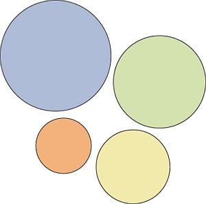 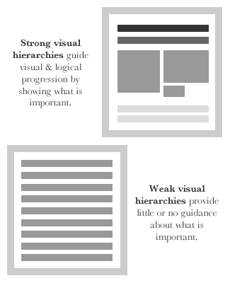
IE, Start with the main theme of the website
Have a specific goal, so that you can prioritize it. Now you try
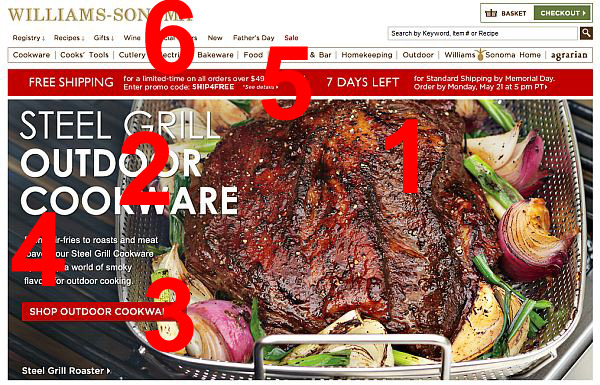
Law of Proximity
People group things together that are close together in space. They become a single perceived object.
With effective web design, you need to make sure things that do NOT go together, are not perceived as one.
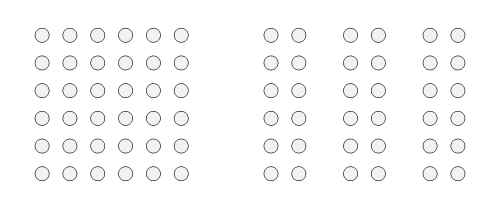
For example, Craigslist is using this law to make user more easy to read by sub-categories their items
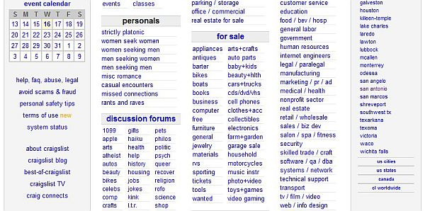Law of Similarity
We group similar things together. This similarity can occur in the form of shape, colour, shading or other qualities.
Here we group black dots into one group and whites into another one, because – well, the black dots look kind of similar to each other.
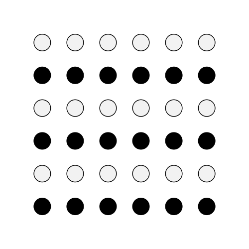
For example, Pokemon makes all the episode boxes similar, so we see all the episode as a single group:
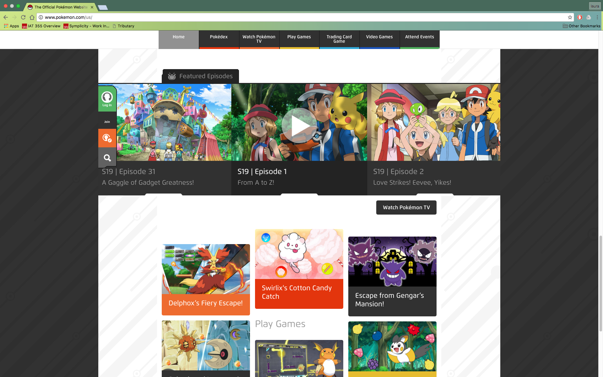Law of Closure
We seek completeness. With shapes that aren’t closed, when parts of a whole picture are missing, our perception fills in the visual gap. We see two squares overlaid on four circles even though none of these shapes actually exist in the graphic.
Law of Symmetry
The mind perceives objects as being symmetrical and forming around a center point. It is perceptually pleasing to be able to divide objects into an even number of symmetrical parts.
WWhen we look at the image above, we tend to observe three pairs of symmetrical brackets rather than six individual brackets.
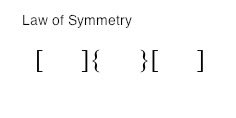
People prefer symmetric appearances over asymmetric ones. Balanced three columns and the curve add to the enjoyment
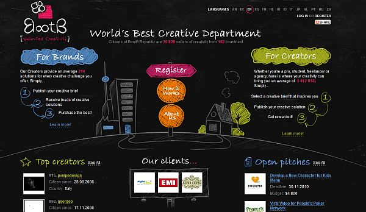Law of Common Fate
We tend to perceive objects as lines that move along a path. We group together of objects that have the same trend of motion and are therefore on the same path.
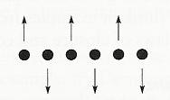
For example, picture below, eyes follow the direction of the hands
Law of Continuity
People have a tendency to perceive a line as continuing its established direction. In cases where there is an intersection between objects (e.g. lines), we tend to perceive the two lines as two single uninterrupted entities. Stimuli remains distinct even with overlap.
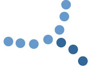
For example, picture below, eyes follow the direction of the
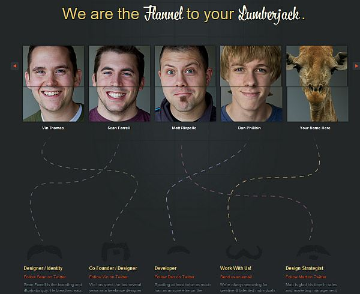White space and clean design
White space (also called ‘negative space’) is the portion of a page left “empty”. It’s the space between graphics, margins, gutters, space between columns, space between lines of type or visuals.
Enough white space makes a website look ‘clean’. While clean design is crucial to communicating a clear message, it doesn’t just mean less content. Clean design means a design that makes the best use of the space it is in. To make a clean design, you have to know how to communicate clearly by using white space wisely.
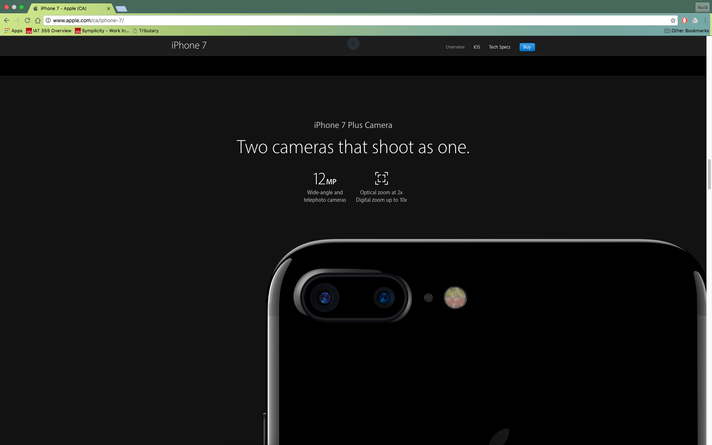
Make sure everything work together
Choose a main theme for you website, or you can use the same topic from your previous in class exercises, then add two additional pages to the website, for each page have at least 4 images, 1video/ audio files. Time to make everything work together, make sure all you webpages link to the index page. So totally there are 3 webpages, for you website.